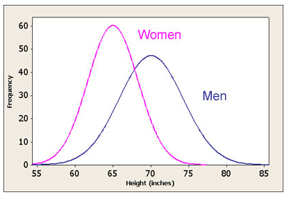
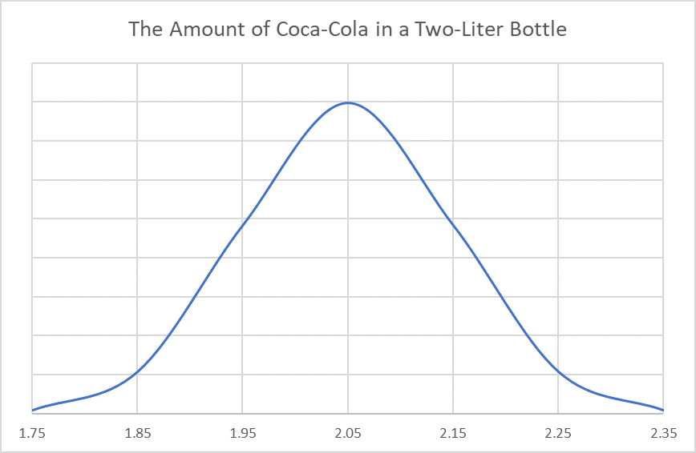
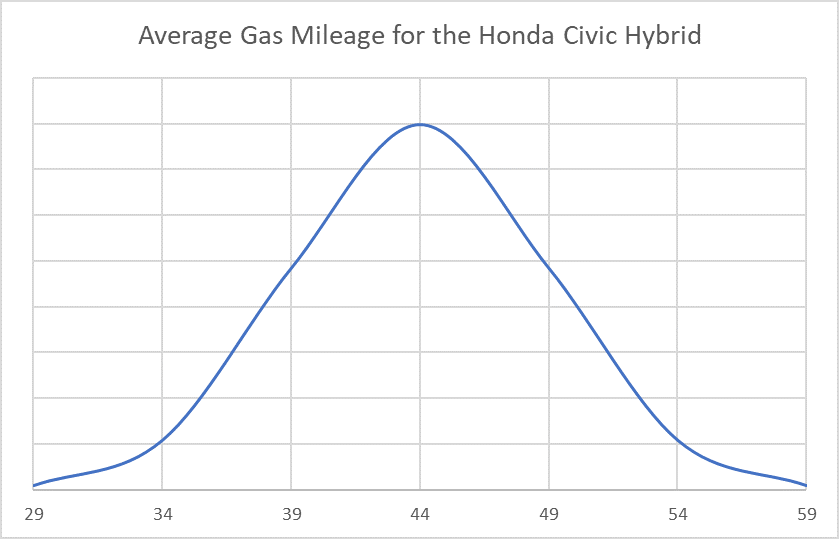

Statistics Unit
2.10 The Normal Distribution
If we took a large sample of men’s and women’s heights and graphed the frequency of the heights, we’d see something like this:
![The graph is a histogram of the frequency of heights for women and for men in a sample. The x-axis represents the height in inches and the y-axis represents the frequency of each height. The graph for the women is normally distributed between 55 inches tall and 75 inches tall. The mean height for the women is 65 inches. The men's graph is normally distributed between 55 inches and 85 inches tall. The mean height is about 72 inches. While the graph is a histogram, there are curves drawn around each to show that there is a normal distribution.](images/u2s10intro1.png)
When we remove the histograms, we see the bell-shaped normal distributions.
- What is the mode of the women's heights?
- What is the median women’s height?
- What is the mean women’s height?
- Variation is a measure of how much the data values are spread out.
65 inches
65 inches
65 inches
Which has greater variation: women’s heights or men’s heights?
The graph of the men's heights has greater variation
Bell-shaped: most data values clustered near the mean, well-defined single peak
Symmetric: data values spread evenly around the mean, larger deviations from the mean become increasingly rare, tapering tails of the distribution.
Adult heights, scores on standardized tests, sports statistics, machine-made products
![There are three graphs in the picture. All three graphs are of the same bell-shaped curve, a normal distribution curve. The x-axis shows the mean in the middle, the highest point of the graph. Three standard deviations to the left and to the right are also marked on the graph. So, the x-axis reads, -3, -2, -1, mean, +1, +2, +3. The first graph is shaded below the curve between -1 and +1 to show that 68% of all data in a normal distribution will be between -1 and +1 standard deviations from the mean. The second graph is shaded below the curve from -2 to +2 to show that 95% of the data in a normal distribution is between -2 and +2 standard deviations from the mean. The third graph is shaded below the curve from -3 to +3 to show that 99.7% of the data in a nomral distribution is between -3 and +3 standard deviations from the mean.](images/u2s10intro3.png)
![The graph is a normal distribution curve very similar to the previous graphs. On this graph, percentages of data are shown between each standard deviation mark on the x-axis. The percentage between -3 and -2 is 2.35%. The percentage between -2 and -1 is 13.5%. The percentage between -1 and the mean is 34%. The percentage between the mean and +1 is 34%. The percentage between +1 and +2 is 13.5%. The percentage between +2 and +3 is 2.35%. These percentages represent the percent of data that lies between each of the standard deviations. For example, 13.5% of all data in a normal distribution are between -2 and -1 standard deviations from the mean.](images/u2s10intro4.png)
- The amount of coca-cola in a two-liter bottle is normally distributed with a mean of 2.05 liters and a standard deviation of 0.1 liters. (0.1 liters is approximately 3 ounces or 0.4 cups)
Sketch a distribution curve and label.

- What percentage of two-liter Coca-Cola bottles contain between 1.95 and 2.15 liters?
- What percentage of two-liter Coca-Cola bottles contain more than 2.05 liters?
- Find the range of liters that approximately 95% of all Coca-Cola bottles contain?
- What percentage of two-liter bottles contain between 1.85 and 2.15 liters?
- What percentage of two-liter bottles contain less than 1.85 liters?
- In a sample of 10,000 two-liter Coca-Cola bottles, how many would be expected to contain more than 2.35 liters? (This is almost 1.5 cups above the advertised 2 liters)
68%
50%
1.85 - 2.25 liters
81.5%
2.5%
.0015*10,000 = 15 bottles
- The average gas mileage for a hybrid Honda Civic is normally distributed with a mean of 44 miles per gallon and a standard deviation of 5 mpg.
Sketch a distribution curve and label.

- What percentage of Honda Civic hybrids get better than an average of 49 miles per gallon?
- What percentage of Civic hybrids get worse than an average of 39 miles per gallon?
- What percentage of Civic hybrids get between 29 and 39 miles per gallon?
- Find the range in miles per gallon for 99.7% of Civic Hybrids.
- In a sample of 500 Civic hybrids, how many would be expected to get between 39 and 49 miles per gallon on average?
- In a sample of 500 Civic hybrids, how many would be expected to get better than an average of 59 miles per gallon?
16%
16%
15.85%
29 - 59 mpg
0.68 * 500 = 340 Honda Civic Hybrids
0.0015 * 500 = 0.75
Less than one Honda Civic Hybrid per 500 Civics will get between 39 and 49 mpg.